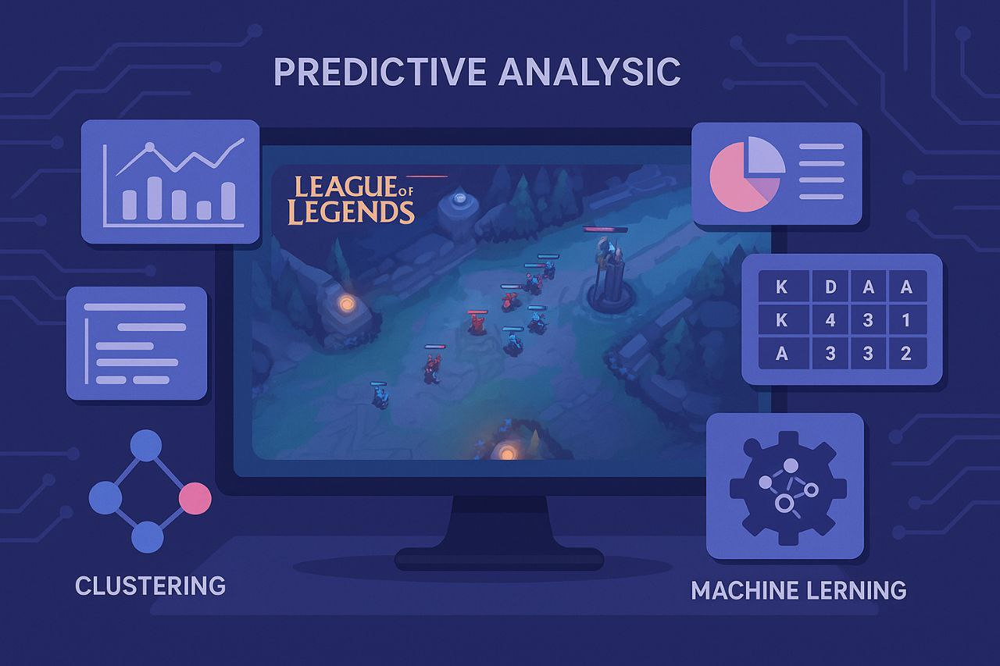
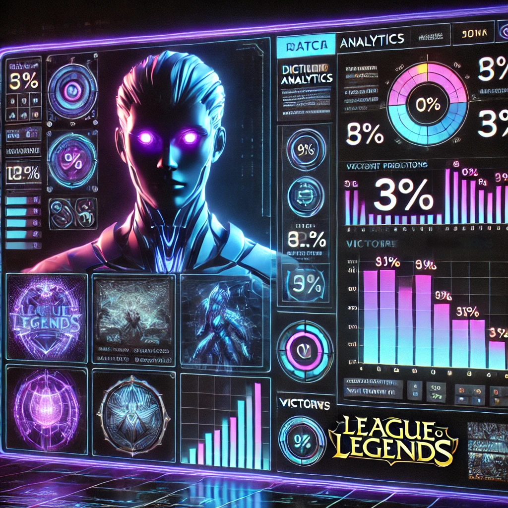
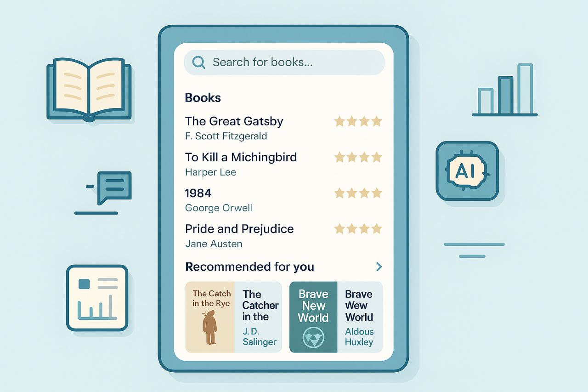
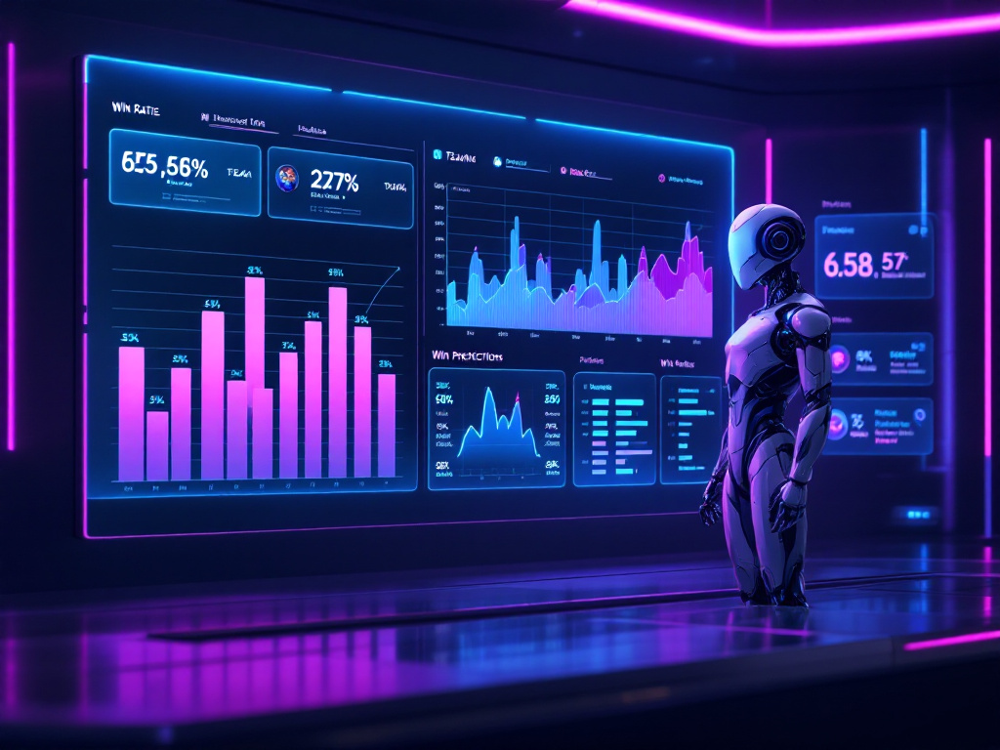
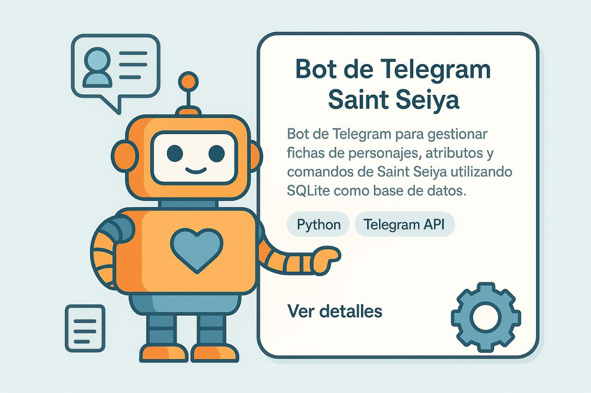
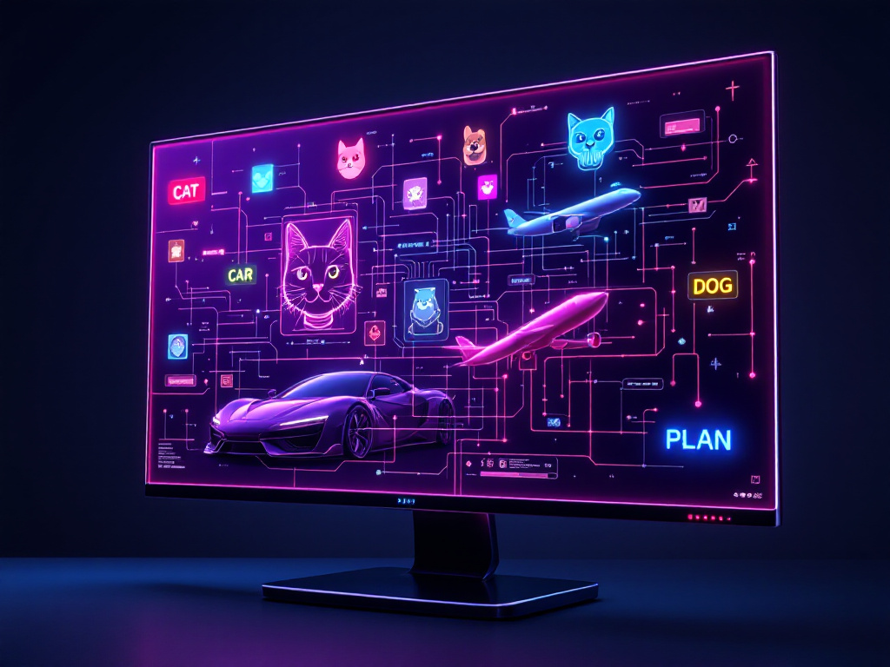

Sobre mí
Soy un profesional enfocado en Big Data y Machine Learning con experiencia en el desarrollo de soluciones de Business Intelligence. Me apasiona usar Python para resolver problemas complejos, automatizar tareas y extraer insights valiosos de los datos.
Actualmente, estoy trabajando en proyectos personales relacionados con videojuegos, análisis de League of Legends, análisis de sentimientos en Twitch/YouTube y desarrollo de bots de Telegram temáticos de Saint Seiya.
Mi objetivo es combinar mi pasión por la tecnología, los datos y los videojuegos para crear soluciones innovadoras que aporten valor.
Habilidades
Tecnologías & Lenguajes
Herramientas de Big Data y Data Science
Soft Skills
Proyectos Destacados

Predicción de victorias en LoL
Sistema de predicción basado en datos de los primeros 10 minutos de partidas clasificadas, con precisión superior al 75% usando Random Forest.
Ver detalles
Clusterización de Jugadores Pro
Análisis de estilos de juego mediante segmentación no supervisada, identificando 5 perfiles distintos de jugadores profesionales.
Ver detalles
Recomendador de Libros
Sistema de recomendación basado en embeddings y similitud semántica de descripciones de libros, con interfaz en Streamlit.
Ver detallesAnálisis Financiero Automatizado
App web que procesa extractos bancarios en PDF y genera dashboards financieros automatizados en tiempo real.
Ver detalles
Clasificación de Engagement
Sistema de clasificación de usuarios según su comportamiento en ecommerce para optimizar estrategias de marketing.
Ver detalles
Detección de Insectos
Modelo de clasificación para detectar insectos usando datos acústicos y de movimiento de sensores Arduino.
Ver detalles
Clasificación de Mariposas
CNN para clasificar especies de mariposas por imagen, con precisión superior al 85% usando técnicas de data augmentation.
Ver detallesFormación Académica
Máster en Big Data & Business Intelligence
Especialización en análisis de datos masivos, machine learning y visualización avanzada. Proyecto final sobre análisis predictivo en League of Legends.
Grado en Ingeniería de Sistemas
Enfoque en programación, bases de datos y análisis de sistemas. Especialización en inteligencia artificial y procesamiento de datos.
Contacto
¿Charlamos sobre datos, proyectos o videojuegos? No dudes en ponerte en contacto conmigo.
- Sevilla, España
- @FerC1414
- linkedin.com/in/fercarstens
- fercarstens7@gmail.com